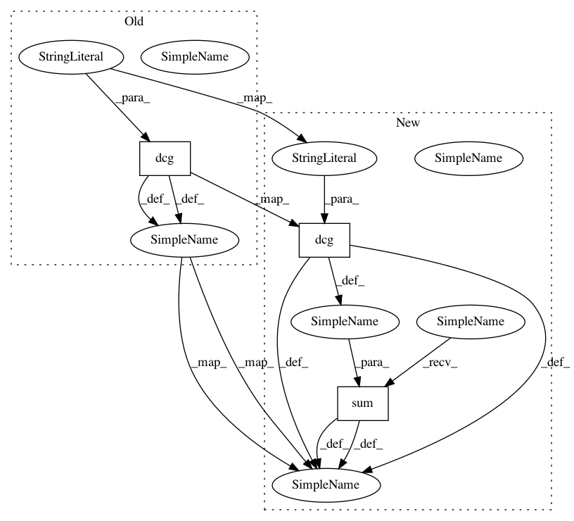

f4beaac559e00a3676d942dc7e8fea69efc01cfe,catalyst/metrics/tests/test_ndcg.py,,test_dcg,#,10
Before Change
y_true = [2.0, 2.0, 1.0, 0.0]
y_pred = np.arange(3, -1, -1)
dcg_at4 = metrics.dcg(
torch.tensor([y_pred]), torch.tensor([y_true]), gain_function="rank"
)
assert torch.isclose(dcg_at4, torch.tensor(4.631), atol=0.05)
y_true = [3, 2, 3, 0, 0, 1, 2, 2, 3, 0]
y_pred = np.arange(9, -1, -1)
After Change
y_true = [2.0, 2.0, 1.0, 0.0]
y_pred = np.arange(3, -1, -1)
dcg_at4 = torch.sum(
metrics.dcg(
torch.tensor([y_pred]),
torch.tensor([y_true]),
gain_function="linear_rank",
)
)
assert torch.isclose(dcg_at4, torch.tensor(4.631), atol=0.05)
y_true = [3, 2, 3, 0, 0, 1, 2, 2, 3, 0]
y_pred = np.arange(9, -1, -1)
In pattern: SUPERPATTERN
Frequency: 3
Non-data size: 3
Instances
Project Name: Scitator/catalyst
Commit Name: f4beaac559e00a3676d942dc7e8fea69efc01cfe
Time: 2020-11-30
Author: raveforlive@gmail.com
File Name: catalyst/metrics/tests/test_ndcg.py
Class Name:
Method Name: test_dcg